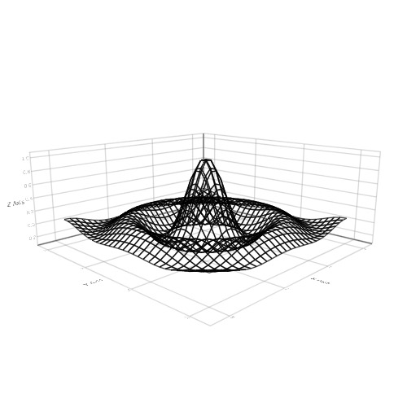
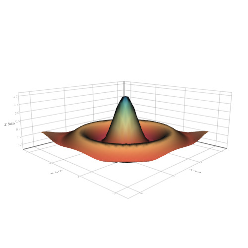
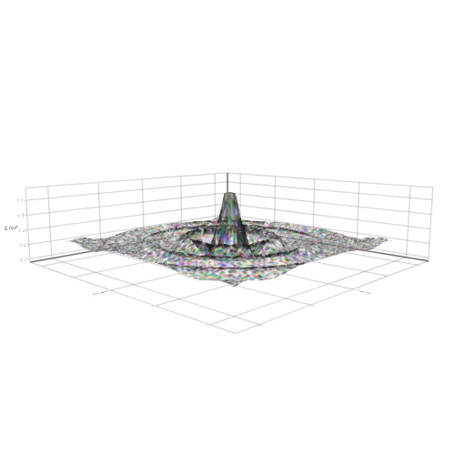
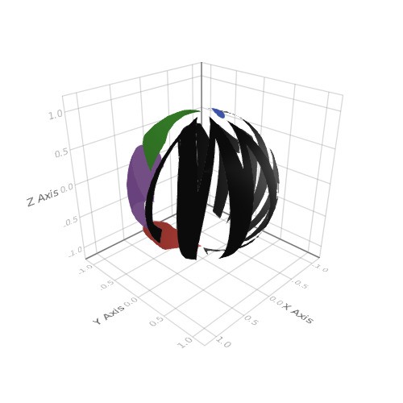
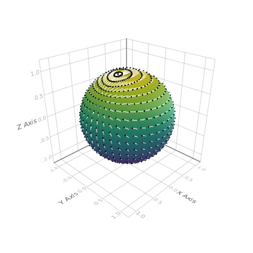
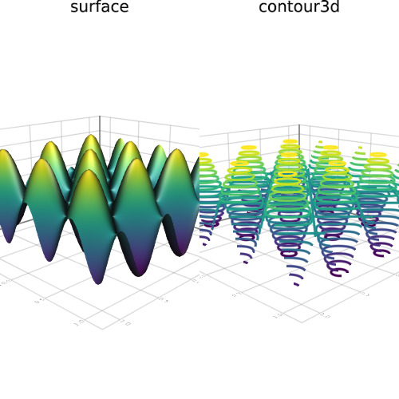
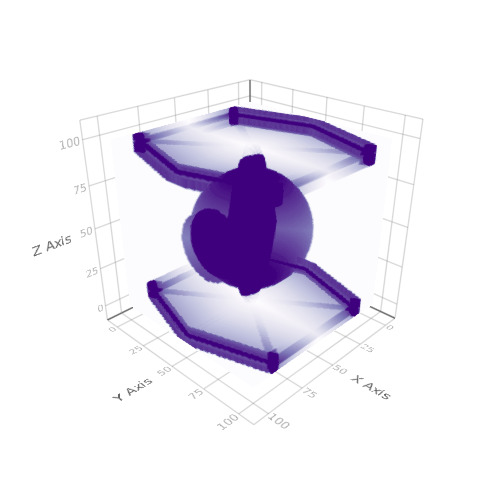

surface
Wireframe of a Surface
Tags: 3d, surface, wireframe.
using Makie
function xy_data(x, y)
r = sqrt(x^2 + y^2)
r == 0.0 ? 1f0 : (sin(r)/r)
end
N = 30
lspace = linspace(-10, 10, N)
z = Float32[xy_data(x, y) for x in lspace, y in lspace]
range = linspace(0, 3, N)
wireframe(range, range, z)

Surface
Tags: 3d, surface.
using Makie
N = 30
function xy_data(x, y)
r = sqrt(x^2 + y^2)
r == 0.0 ? 1f0 : (sin(r)/r)
end
lspace = linspace(-10, 10, N)
z = Float32[xy_data(x, y) for x in lspace, y in lspace]
range = linspace(0, 3, N)
surface(
range, range, z,
colormap = :Spectral
)

Surface with image
Tags: 3d, image, surface.
using Makie
N = 30
function xy_data(x, y)
r = sqrt(x^2 + y^2)
r == 0.0 ? 1f0 : (sin(r)/r)
end
r = linspace(-2, 2, N)
surf_func(i) = [Float32(xy_data(x*i, y*i)) for x = r, y = r]
surface(
r, r, surf_func(10),
color = rand(RGBAf0, 124, 124)
)

Image on Surface Sphere
Tags: 3d, image, sphere, surface.
using Makie
n = 20
θ = [0;(0.5:n-0.5)/n;1]
φ = [(0:2n-2)*2/(2n-1);2]
x = [cospi(φ)*sinpi(θ) for θ in θ, φ in φ]
y = [sinpi(φ)*sinpi(θ) for θ in θ, φ in φ]
z = [cospi(θ) for θ in θ, φ in φ]
rand([-1f0, 1f0], 3)
pts = vec(Point3f0.(x, y, z))
surface(x, y, z, color = Makie.logo())

Arrows on Sphere
Tags: 3d, arrows, sphere, surface.
using Makie
n = 20
f = (x,y,z) -> x*exp(cos(y)*z)
∇f = (x,y,z) -> Point3f0(exp(cos(y)*z), -sin(y)*z*x*exp(cos(y)*z), x*cos(y)*exp(cos(y)*z))
∇ˢf = (x,y,z) -> ∇f(x,y,z) - Point3f0(x,y,z)*dot(Point3f0(x,y,z), ∇f(x,y,z))
θ = [0;(0.5:n-0.5)/n;1]
φ = [(0:2n-2)*2/(2n-1);2]
x = [cospi(φ)*sinpi(θ) for θ in θ, φ in φ]
y = [sinpi(φ)*sinpi(θ) for θ in θ, φ in φ]
z = [cospi(θ) for θ in θ, φ in φ]
pts = vec(Point3f0.(x, y, z))
∇ˢF = vec(∇ˢf.(x, y, z)) .* 0.1f0
surface(x, y, z)
arrows!(
pts, ∇ˢF,
arrowsize = 0.03, linecolor = (:white, 0.6), linewidth = 3
)

surface + contour3d
Tags: 3d, contour3d, subscene, surface.
using Makie
vx = -1:0.01:1
vy = -1:0.01:1
f(x, y) = (sin(x*10) + cos(y*10)) / 4
p1 = surface(vx, vy, f)
p2 = contour3d(vx, vy, (x, y) -> f(x,y), levels = 15, linewidth = 3)
scene = AbstractPlotting.vbox(p1, p2)
text!(campixel(p1), "surface", position = widths(p1) .* Vec(0.5, 1), align = (:center, :top), raw = true)
text!(campixel(p2), "contour3d", position = widths(p2) .* Vec(0.5, 1), align = (:center, :top), raw = true)
scene

Axis + Surface
Tags: 3d, axis, interaction, manipulation, surface.
using Makie
vx = -1:0.01:1
vy = -1:0.01:1
f(x, y) = (sin(x*10) + cos(y*10)) / 4
scene = Scene(resolution = (500, 500))
# One way to style the axis is to pass a nested dictionary / named tuple to it.
surface!(scene, vx, vy, f, axis = NT(frame = NT(linewidth = 2.0)))
psurf = scene[end] # the surface we last plotted to scene
# One can also directly get the axis object and manipulate it
axis = scene[Axis] # get axis
# You can access nested attributes likes this:
axis[:names, :axisnames] = ("\\bf{ℜ}[u]", "\\bf{𝕴}[u]", " OK\n\\bf{δ}\n γ")
tstyle = axis[:names] # or just get the nested attributes and work directly with them
tstyle[:textsize] = 10
tstyle[:textcolor] = (:red, :green, :black)
tstyle[:font] = "helvetica"
psurf[:colormap] = :RdYlBu
wh = widths(scene)
t = text!(
campixel(scene),
"Multipole Representation of first resonances of U-238",
position = (wh[1] / 2.0, wh[2] - 20.0),
align = (:center, :center),
textsize = 20,
font = "helvetica",
raw = :true
)
c = lines!(scene, Circle(Point2f0(0.1, 0.5), 0.1f0), color = :red, offset = Vec3f0(0, 0, 1))
scene
#update surface
# TODO explain and improve the situation here
psurf.converted[3][] = f.(vx .+ 0.5, (vy .+ 0.5)')
scene

Animated surface and wireframe
Tags: 3d, animated, axis, record, surface, video, wireframe.
using Makie
scene = Scene();
function xy_data(x, y)
r = sqrt(x^2 + y^2)
r == 0.0 ? 1f0 : (sin(r)/r)
end
r = linspace(-2, 2, 50)
surf_func(i) = [Float32(xy_data(x*i, y*i)) for x = r, y = r]
z = surf_func(20)
surf = surface!(scene, r, r, z)[end]
wf = wireframe!(scene, r, r, Makie.lift(x-> x .+ 1.0, surf[3]),
linewidth = 2f0, color = Makie.lift(x-> to_colormap(x)[5], surf[:colormap])
)
N = 150
scene
record(scene, "./docs/media/animated_surface_and_wireframe.mp4", linspace(5, 40, N)) do i
surf[3] = surf_func(i)
end
Surface + wireframe + contour
Tags: 3d, contour, surface, transformation, wireframe.
using Makie
N = 51
x = linspace(-2, 2, N)
y = x
z = (-x .* exp.(-x .^ 2 .- (y') .^ 2)) .* 4
scene = wireframe(x, y, z)
xm, ym, zm = minimum(scene.limits[])
scene = surface!(scene, x, y, z)
contour!(scene, x, y, z, levels = 15, linewidth = 2, transformation = (:xy, zm))
scene

Spacecraft from a galaxy far, far away
Tags: 3d, colormap, colorrange, contour, implicit, implicits, inequalities, surface.
using Makie
N = 100
r = linspace(-1, 1, N)
# bunch of equations and inequalities
f1(x,y,z) = x.^2 .+ y.^2 .+ z.^2 #center sphere
f2(x,y,z) = y.^2 .+ z.^2 #command deck cylinder thing
f3(x,y,z) = x.^2 .+ 4 .* y.^2 #controls the flattened cylinder connecting center pod to wings
f4(x,y,z) = (y .* 0.7 .+ 0.05) #defines the diagonal spokes
f5(x,y,z) = (y .* 0.7 .- 0.05) #defines the diagonal spokes
f6(x,y,z) = abs.(x) + 0.3 .* abs.(y) #frame part of the wings
e1(x,y,z) = 0.12 .* (1 .- abs.(z)) #limits of a hexagonal tube in the inside of the craft
e2(x,y,z) = abs.(z) .* (abs.(z) .< 0.95) #outer limits of the wing plane
e3(x,y,z) = abs.(z) .* (abs.(z) .> 0.9) #inner limits of the wing plane
e4(x,y,z) = (abs.(x) + abs.(0.3 .*y)) .* ((abs.(x) + abs.(0.3 .* y)) .< 1) #frame of the wings
e5(x,y,z) = abs.(z) .* (abs.(z) .< 1.05) #outside thickness of wing frames, including the spokes
e6(x,y,z) = abs.(z) .* (abs.(z) .> 0.80) #inside thickness of wing frames, including the spokes
e7(x,y,z) = abs.(x) .* (abs.(x) .< 0.7) #length of the straight bars part of frames
e8(x,y,z) = abs.(y) .* (abs.(y) .> 0.9) #width of the straight bars part of frames
e9(x,y,z) = abs.(y) .* (abs.(y) .< 0.035) #the thickness of the horizontal reinforcing bar on the wing planes
amp = 15 #this just amplifies the "strength" of a volume, so that it shows up more clearly in the plot
# spawn the tie fighter
me = [(f1(x,y,z) .* f1(x,y,z).<0.2) .+ ((f2(x,y,z) .* f2(x,y,z).<0.02).*((x.<0.68).*(x.>0.50))) .+ amp .* (f3(x,y,z) .* (f3(x,y,z) .< e1(x,y,z))) .+ (e2(x,y,z).*e3(x,y,z).*e4(x,y,z)) .+ (e5(x,y,z).*e6(x,y,z)).*((e7(x,y,z)).*(e8(x,y,z)) .+ e9(x,y,z) .+ ((x.>f5(x,y,z)).*x).*((x.<f4(x,y,z)).*x) .+ ((-x.>f5(x,y,z)).*x).*((-x.<f4(x,y,z)).*x) .+ ((f6(x,y,z).*(f6(x,y,z).<1.05)).*(f6(x,y,z).*(f6(x,y,z).>0.95)))) for x=r, y=r, z=r]
me2 = me
for i = 1:length(r)
me2[:,:,i] = me2[:,:,i] - min(me2[:,:,i]...)
me2[:,:,i] = me2[:,:,i] ./ max(me2[:,:,i]...)
end
volume(me2, algorithm = :mip, colormap = :Purples, colorrange = (0,0.6))
